- Vous venez de MacDiveQuel fichier exporter, et comment migrer sans rien perdre.
- Télécharger depuis un ordinateurShearwater et autres ordinateurs Bluetooth, ou un câble sur le Mac.
- Garmin DescentImporter les fichiers .fit de la montre ou de Garmin Connect.
Quelque chose ne fonctionne pas ? Consultez Dépannage. Thermocline est un carnet de plongée : il montre ce que votre ordinateur de plongée a enregistré et ne calcule jamais la décompression.
Obtenir l'app
Thermocline est réservé aux appareils Apple : iPhone, iPad, Mac et Apple Watch. Pendant la bêta, il s'installe avec l'app TestFlight d'Apple.
| Tâche | iPhone et iPad | Mac |
|---|---|---|
| Rejoindre la bêta | Rejoindre la bêta : un seul lien pour iPhone, iPad, Mac et Apple Watch. Ouvrez-le sur chaque appareil et installez depuis TestFlight. L'app Apple Watch est fournie avec l'app iPhone. Tous les appareils partagent le même carnet par iCloud. | |
| Bêta iPhone rejointe avant le 18 novembre 2026 | Cette app a déménagé. Voir passer de l'ancienne app iPhone. | |
| Rester à jour | Quand TestFlight propose une nouvelle version, mettez à jour chaque appareil que vous utilisez. Une version plus ancienne cesse d'envoyer les modifications jusqu'à sa mise à jour, et l'indique. Rien n'est perdu. | |
Premier lancement et visite guidée
Au premier lancement, l'app demande votre nom, vos unités et l'origine de vos plongées. Les unités sont stockées en métrique ; les changer ne modifie que l'affichage.
| Tâche | iPhone et iPad | Mac |
|---|---|---|
| Réglages | L'onglet Profil | Thermocline → Réglages |
| La visite guidée | Profil → Aide → Voir la visite guidée | Aide → Faire la visite guidée |
La visite guidée parcourt chaque écran sur un carnet d'exemple, pas le vôtre.
Les captures d'écran de cette page montrent le carnet d'exemple de la visite guidée : les plongées et les sites sont inventés. Touchez-en une pour l'afficher en taille réelle.

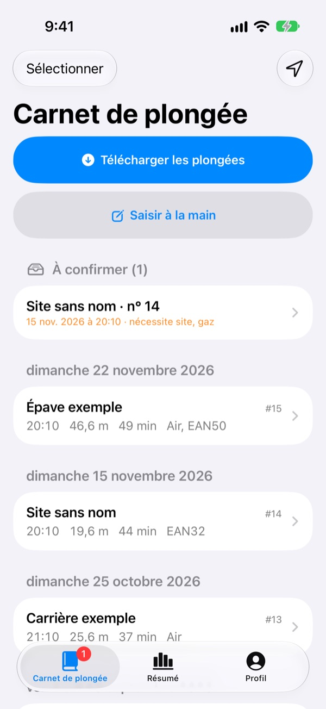
Reprendre votre carnet
Thermocline lit MacDive (son dossier, XML ou UDDF), une base de données Shearwater Cloud, les fichiers .fit Garmin, l'UDDF de n'importe quel carnet, et le CSV. Vous choisissez les plongées à ajouter, et tout ce qui ne peut pas être lu est listé, jamais supprimé en silence.
| Tâche | iPhone et iPad | Mac |
|---|---|---|
| Importer un fichier | Profil → Vos données → Importer un fichier de carnet, puis choisissez-le dans iCloud Drive ou Fichiers. | La commande d'import du menu Fichier (⇧⌘I). |
| Fichiers .fit Garmin | Sélectionnez-en plusieurs à la fois. | Sélectionnez-en plusieurs, ou un dossier entier. |
| Le dossier de MacDive, avec les photos | Mac uniquement. Reprenez les photos plus tard avec l'app Mac. | Fichier → Importer depuis MacDive… et choisissez le dossier de MacDive : plongées, photos de plongée et photos de cartes. Les fichiers de MacDive ne sont pas modifiés. |
| Choisir les plongées | Décochez celles que vous ne voulez pas, puis Importer. | |
| Annuler un import | Le point de restauration Avant un import, enregistré avant tout import de plus d'une plongée. | Annuler l'import… dans le rapport d'import, ou le même point de restauration. |
À la fin de l'import, un rapport indique combien de plongées ont été ajoutées, quels éléments n'ont pas été importés et pourquoi, et ce qu'il faut vérifier. Les plongées dont le fichier n'avait aucun gaz attendent dans À confirmer.
Quel fichier MacDive utiliser
MacDive peut vous fournir son XML, son UDDF, ou (sur le Mac) tout son dossier. Ils ne contiennent pas les mêmes choses :
| Ce qu'il contient | MacDive XML | MacDive UDDF | Dossier MacDive (Mac) |
|---|---|---|---|
| Plongées, sites, binômes, gaz | Oui | Oui | Oui |
| Tailles des bouteilles | Oui | Non : ses tailles ne sont pas des volumes en eau, elles restent donc vides | Oui |
| Profils de profondeur | Chaque plongée | Chaque plongée | Toutes sauf les plongées que MacDive a téléchargées sur iPhone ou iPad, qu'il stocke chiffrées |
| La NDL et la ppO₂ de l'ordinateur tout au long de la plongée | Oui | Non | Oui, sauf ces plongées chiffrées |
| Le CNS de l'ordinateur | Oui | Non | Oui |
| Équipement, tags et types de plongée | Oui | Non | Oui |
| Photos de plongée et de cartes | Non | Non | Oui |
| Tâche | iPhone et iPad | Mac |
|---|---|---|
| Meilleure méthode | Exportez vos plongées depuis MacDive en XML, enregistrez le fichier dans iCloud Drive, et importez-le. | Importez le dossier de MacDive, puis le XML par-dessus. Le XML complète les profils, la NDL et la ppO₂ des plongées chiffrées. |
| UDDF déjà importé | Importez aussi le XML. Les plongées déjà dans votre carnet sont reconnues, pas ajoutées à nouveau, et seul ce qui manque est complété, tailles des bouteilles comprises. Rien de ce que vous avez saisi ou corrigé n'est modifié. | |
Montres Garmin Descent
Une Garmin Descent conserve un fichier .fit par plongée. Il y a deux façons de les récupérer :
- Depuis la montre : branchez-la au Mac avec son câble et ouvrez le dossier GARMIN → Activity. Sur le Mac, vous pouvez importer tout le dossier GARMIN ; les fichiers qui ne sont pas des plongées, comme les courses et les réglages, sont ignorés.
- Depuis Garmin Connect : ouvrez la plongée et choisissez Exporter au format original. Vous obtenez un .zip : décompressez-le d'abord, puis importez le fichier .fit qu'il contient.
Les positions viennent du GPS de la montre. En dérivante, la montre enregistre comme départ l'endroit où vous avez fait surface ; l'import retrouve l'endroit où vous êtes réellement entré dans l'eau, et la plongée est associée à ce site. Ajoutez dans les notes les autres épaves que vous avez croisées.

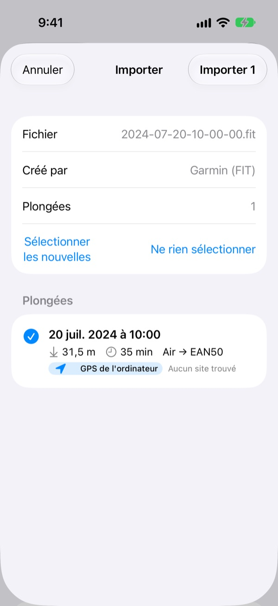
Télécharger les plongées de votre ordinateur
Mettez d'abord l'ordinateur de plongée en mode Bluetooth. Sur un Shearwater : Menu → Bluetooth. Il y reste environ deux minutes. Seules les plongées plus récentes que votre dernier téléchargement sont récupérées.
| Tâche | iPhone et iPad | Mac |
|---|---|---|
| Ouvrir | Carnet de plongée → Télécharger les plongées | Fichier → Télécharger depuis l'ordinateur de plongée… (⇧⌘D) |
| Connecter | Bluetooth. Choisissez votre ordinateur sous À proximité ; la première fois, saisissez le code PIN affiché sur son écran. | Choisissez Bluetooth ou Câble USB. Pour un câble, choisissez le modèle de votre ordinateur et son port, et suivez Avant de commencer. |
| Terminer | Décochez les plongées que vous ne voulez pas, puis Garder. Les plongées décochées restent sur l'ordinateur et sont proposées à nouveau la fois suivante. | Télécharger. |
La question de l'horloge. Le premier téléchargement depuis chaque ordinateur demande Sur quel fuseau l'horloge de l'ordinateur est-elle réglée ? La plupart des ordinateurs enregistrent l'heure locale sans fuseau horaire ; cette réponse garde donc vos heures de plongée justes quand vous voyagez. La réponse est mémorisée pour cet ordinateur.
Après avoir choisi les plongées, vous pouvez les parcourir une par une pour définir le site et les gaz, ou Terminer plus tard : elles attendent dans À confirmer.
Vous avez supprimé une plongée et voulez la récupérer ? Activez Télécharger toutes les plongées de l'ordinateur. C'est plus long ; les plongées déjà dans votre carnet sont ignorées.

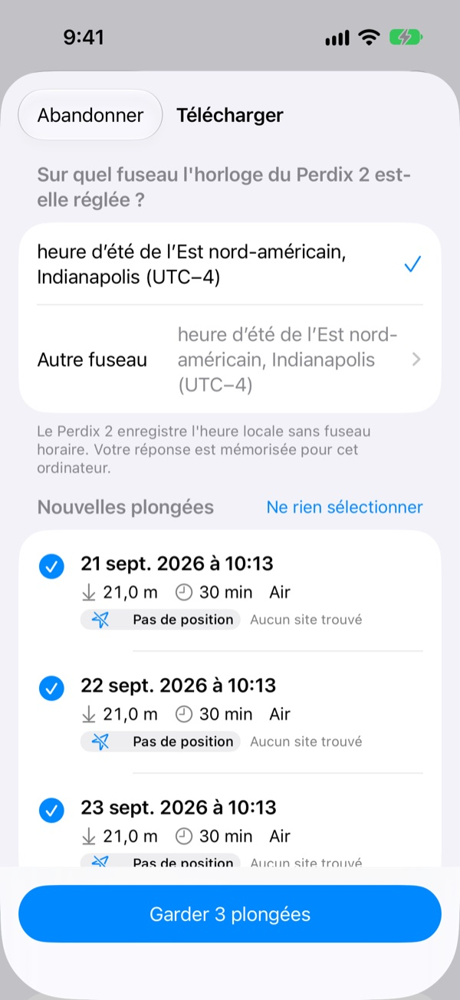
Shearwater Predator et Petrel 1
Ils utilisent un Bluetooth plus ancien (Bluetooth Classic) que les iPhone et iPad ne peuvent pas utiliser. Sur le Mac, jumelez d'abord l'ordinateur dans Réglages Système → Bluetooth, puis choisissez Câble USB dans la fenêtre de téléchargement : son port peut apparaître dans la liste. Mettez l'ordinateur en mode transfert Bluetooth et choisissez Télécharger. Cela n'a pas encore été essayé sur un vrai Predator ou Petrel 1 ; merci donc d'envoyer le journal de téléchargement, que cela fonctionne ou non. Sur iPhone, importez plutôt leurs plongées depuis Shearwater Cloud ou un fichier UDDF.
Ordinateurs compatibles
Thermocline télécharge avec libdivecomputer, la bibliothèque open source que partagent de nombreux carnets. Elle connaît plusieurs centaines de modèles de la plupart des fabricants. Pour voir le vôtre, ouvrez l'écran de téléchargement et choisissez Ordinateurs compatibles ; chacun indique s'il fonctionne sur iPhone et iPad ou s'il nécessite le Mac.
| Connexion | Où cela fonctionne | Essayé jusqu'ici |
|---|---|---|
| Bluetooth LE | iPhone, iPad et Mac | Shearwater Perdix et Perdix 2. Les autres modèles devraient fonctionner : dites-le-nous. |
| Câble USB ou série | Mac uniquement | Développé, pas encore essayé sur du vrai matériel. |
| Bluetooth Classic (Predator, Petrel 1 et autres modèles plus anciens) | Mac uniquement, jumelé comme port série (comment) | Pas encore essayé. |
| Garmin Descent (fichiers .fit) | Import sur iPhone, iPad et Mac (comment) | Plongées Descent, dérivantes comprises. |
Vous avez un ordinateur que nous n'avons pas essayé ? Aidez-nous à le tester.
Confirmer le site et les gaz
Les plongées auxquelles il manque encore un site ou des gaz confirmés attendent dans À confirmer. Rien ne les empêche d'être enregistrées ; complétez-les quand vous voulez.
| Tâche | iPhone et iPad | Mac |
|---|---|---|
| Les trouver | En haut de Carnet de plongée, sous À confirmer. | Aller → À confirmer (⌘2) |
| Confirmer | Ouvrez-en une, puis Choisir un site et touchez Oui, ces gaz sont corrects (ou Corriger le gaz…). | Le bandeau de chaque plongée propose Confirmer le site et les gaz…, Choisir un site… ou Confirmer les gaz…. |
Thermocline suggère le site d'après la position de la plongée : vos propres sites d'abord, puis les listes intégrées de plus de 76 000 sites de plongée et épaves, qui fonctionnent hors ligne.

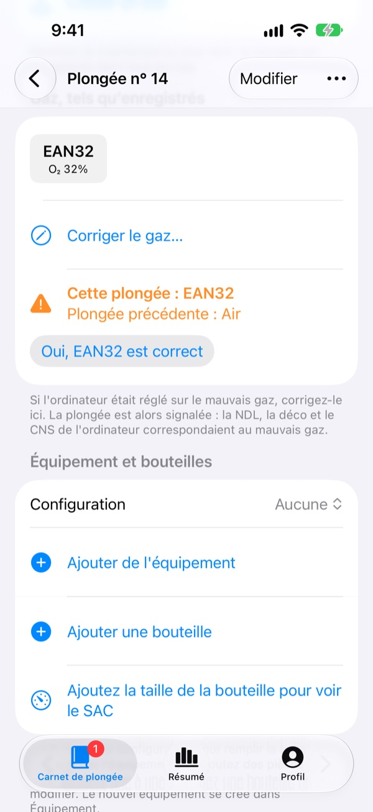
Lire une plongée
| Tâche | iPhone et iPad | Mac |
|---|---|---|
| Lire n'importe quel instant | Faites glisser le doigt sur le graphique. | Pointez le graphique. |
| Saisir une plongée à la main | Carnet de plongée → Saisir à la main | ⌘N |
- Les valeurs de sécurité occupent un bandeau fixe en haut de chaque plongée, toujours au même endroit.
- Le profil : les pastilles sous le graphique affichent ou masquent Bouteille, ppO₂, NDL, SAC, Temp., CNS et Remontée, en bandes Empilé ou en une seule vue Superposé. Seul ce que la plongée a enregistré reçoit une pastille. La NDL est celle de l'ordinateur et s'arrête pendant la déco, où la bande rouge montre les paliers. Sur un iPhone étroit, les pastilles restent sur une ligne et défilent horizontalement. Essayez-le sur la page d'accueil.
- Recycleurs : pour tout ordinateur ou fichier qui les enregistre, la bande ppO₂ montre le setpoint avec la ppO₂ retenue par vote (et chaque cellule, quand elle est enregistrée), et la lecture donne le setpoint à cet instant. Un passage du diluant à tout autre gaz est indiqué comme bailout.
- Consommation de gaz : touchez ou cliquez sur Comment ? à côté du chiffre de SAC pour voir chaque donnée : la bouteille, son volume en eau, les pressions, la température et la correction de gaz réel.
- Modifications : modifiez n'importe quelle plongée. Une correction conserve la valeur d'origine de l'ordinateur.
- Lest : le premier toucher sur + définit Sans lest, pour une plongée sans lest porté. Touchez − à partir de là pour l'effacer.
- Liens dans les notes : les liens web dans les notes d'une plongée peuvent être touchés ou cliqués. Quand vous avez fini de taper, touchez OK au-dessus du clavier : les liens s'affichent alors, et un lien YouTube ou Vimeo reçoit un bouton Ajouter … aux liens vidéo sous les notes. Pour taper à nouveau dans les notes, choisissez Modifier les notes.

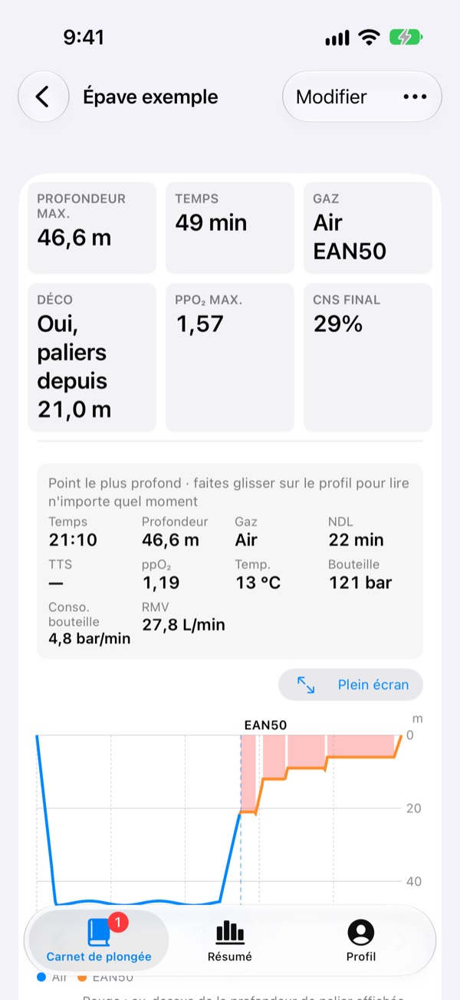

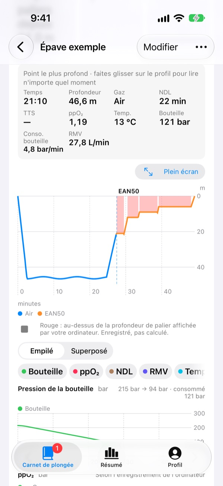


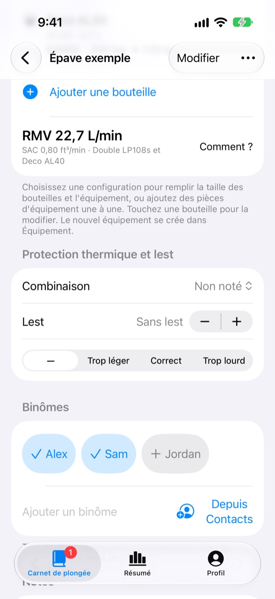

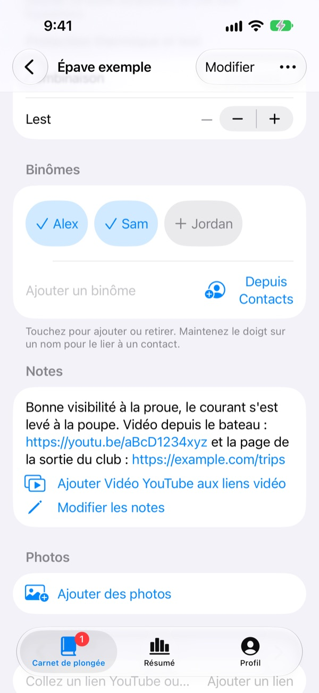

Sites, positions et Apple Watch
| Tâche | iPhone et iPad | Mac |
|---|---|---|
| Ajouter un site | Profil → Sites, puis le bouton d'ajout : Trouver ou nommer un site ou Marquer le point ici (GPS). | Aller → Sites (⌘4), puis Ajouter un site… |
| Voir tous les sites listés | Profil → Sites → Carte, puis le bouton du globe, ou pincez jusqu'au bout pour dézoomer. Les épaves sont en orange, les récifs et sites de plongée en bleu, vos propres sites en drapeaux rouges. | Sites, puis Afficher le globe dans la barre d'outils, ou dézoomez jusqu'au bout. |
| Trouver une position | Un site sans position propose Trouver la position : vérifiez la suggestion sur la carte, saisissez des coordonnées, ou placez une épingle. | Trouver les positions… passe en revue chaque site sans position, un à la fois. |
Apple Watch : marquez un point en surface et il attend sur votre iPhone dans À confirmer. Voir Apple Watch.
Les positions des sites servent à tenir le carnet, pas à naviguer.

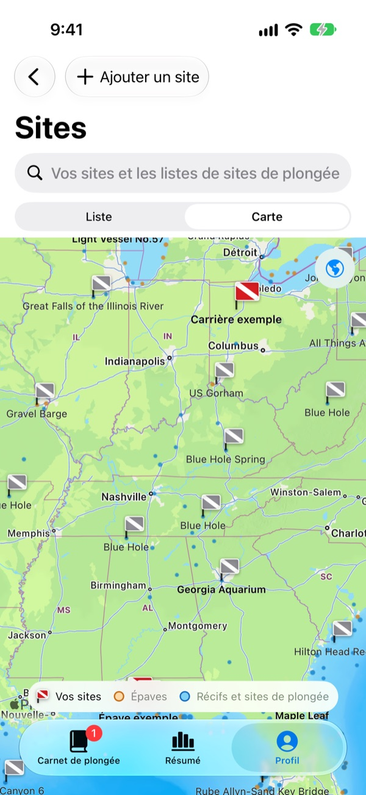
Apple Watch
L'app Watch fait une seule chose : elle marque l'endroit où vous êtes en surface, pour que le site d'une plongée soit facile à noter. Elle n'enregistre pas les plongées ; celles-ci viennent de votre ordinateur de plongée. Elle nécessite watchOS 11 ou ultérieur et un iPhone avec Thermocline.
| Tâche | Apple Watch | iPhone |
|---|---|---|
| Installer | Elle est fournie avec l'app iPhone. Si elle n'est pas sur la montre, ouvrez l'app Watch sur votre iPhone, trouvez Thermocline sous Apps disponibles et touchez Installer. La première fois, autorisez la position pour Thermocline sur la montre. | |
| Marquer un point | En surface, au-dessus du site, ouvrez Thermocline. Attendez Bonne position, puis touchez Marquer le point. La montre tapote votre poignet quand il est enregistré. | Le point arrive tout seul. Si l'iPhone est hors de portée, il est envoyé quand ils sont à nouveau ensemble. |
| Le nommer | Facultatif. Touchez Ajouter un nom après avoir marqué, ou plus tard dans Points marqués, et dictez, griffonnez ou tapez-le, par exemple « proue de l'épave ». Il est enregistré quand vous avez terminé. | Le nom est proposé comme nom du nouveau site. Vous pouvez l'utiliser ou choisir un autre site. |
| Le confirmer | Rien à faire sur la montre. | Carnet de plongée → À confirmer. L'iPhone recherche le point quand il est en ligne, suggère le site connu le plus proche, et montre la plongée à laquelle il appartient le plus probablement. Confirmez-le ou rejetez-le. |
| Vérifier qu'il a été envoyé | Points marqués affiche chacun avec Envoyé à l'iPhone ou En attente d'envoi à l'iPhone, et une carte. Un point quitte la montre une fois confirmé ou rejeté sur l'iPhone. | Une fois confirmé, le site se synchronise avec vos autres appareils comme n'importe quel autre. |

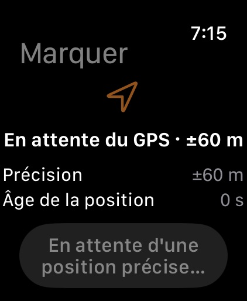

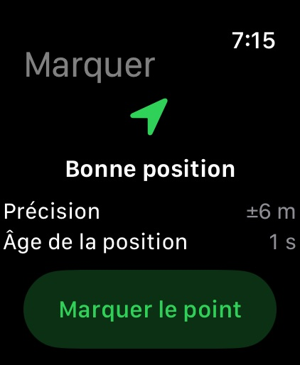

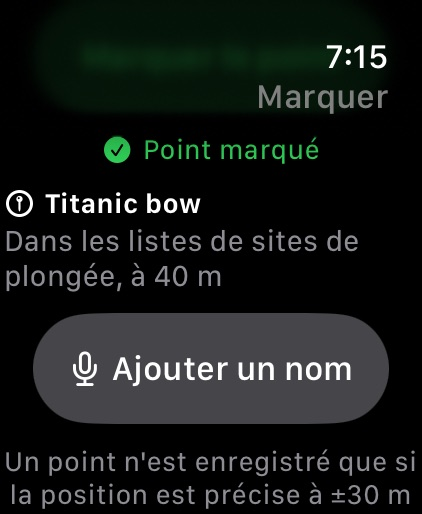

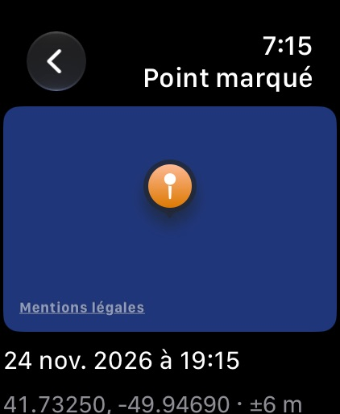
La montre n'enregistre un point qu'à partir d'une position précise à ±30 m et datant de moins de 30 secondes, et elle ignore une ancienne position en cache. Marquez-le en surface, pas sous l'eau.
Les positions des sites servent à tenir le carnet, pas à naviguer.
Équipement et bouteilles
| Tâche | iPhone et iPad | Mac |
|---|---|---|
| Ouvrir Équipement | Profil → Équipement | Aller → Équipement |
- Sur une bouteille, Modèle ouvre le catalogue des bouteilles : cherchez par fabricant ou par modèle (par exemple « PST LP104 ») pour remplir ses tailles publiées, ou saisissez vos propres valeurs.
- Cochez Bi-bouteille (bloc manifoldé) pour un bi.
- Une bouteille en acier poinçonnée d'un + : activez Marquage plus si la dernière épreuve hydraulique a conservé le +. Elle s'affiche alors, par exemple, comme 2400+. Ce réglage apparaît quand les tailles de bouteille sont affichées en pieds cubes.
- Les bouteilles de chaque plongée se trouvent dans la section gaz de la plongée (Ajouter une bouteille, Configuration).
Fusionner et joindre des plongées
- Fusionner sert pour une plongée enregistrée par deux ordinateurs. Les deux enregistrements sont conservés et vous pouvez passer de l'un à l'autre sur le graphique.
- Joindre sert pour une plongée coupée en deux par une brève remontée en surface.
- Thermocline ne fait jamais l'un ou l'autre de lui-même. Quand il repère une paire probable, un bandeau en haut du carnet propose de les vérifier.
| Tâche | iPhone et iPad | Mac |
|---|---|---|
| Le faire vous-même | Touchez Sélectionner, choisissez deux plongées, puis Fusionner ou Joindre. | Sélectionnez deux plongées et faites un clic droit : Fusionner ces plongées… ou Joindre ces plongées… |
| Vous avez changé d'avis | Annuler tout de suite, ou Séparer ces plongées sur la plongée, à tout moment. | |
Photos et liens vidéo
- Ajouter des photos sur une plongée les copie de votre photothèque dans le carnet.
- Pour économiser l'espace iCloud, activez Synchronisation → Économiser l'espace iCloud des photos de plongée sur chaque appareil. Les photos sont alors liées à Photos iCloud au lieu d'être copiées, et les vidéos de votre photothèque peuvent être ajoutées. Thermocline ne demande l'accès à Photos que lorsque vous activez ce réglage.
- Liens vidéo : collez un lien YouTube ou Vimeo sous les photos d'une plongée. Seul le lien est conservé. Un lien déjà présent dans les notes peut être ajouté depuis celles-ci (voir Lire une plongée).
- La même vidéo sur plusieurs plongées : sélectionnez les plongées (sur iPhone, touchez d'abord Sélectionner), choisissez Modifier … plongées…, et ajoutez le lien sous Liens vidéo. Il est ajouté à chaque plongée sélectionnée, et les liens qu'elles ont déjà sont conservés.
Résumé et consommation de gaz
L'onglet Résumé (Résumé dans la barre latérale du Mac) fait le compte de votre carnet : plongées par année et par mois, profondeurs, gaz, records, lieux de plongée, et votre site et votre binôme les plus fréquents. Choisissez une période en haut, par exemple une année, et touchez n'importe quel chiffre ou barre pour voir les plongées correspondantes.
- Respiration montre votre SAC et votre RMV sur toutes les plongées de la période qui ont une taille de bouteille et des pressions de début et de fin, pondérés par la durée et la profondeur. Touchez-la pour voir quelles plongées ont été comptées.
- Certaines plongées importées n'ont pas de taille de bouteille, donc Respiration peut être vide au début (voir Quel fichier MacDive utiliser). Définissez les bouteilles de vos plongées, dans Équipement ou sur chaque plongée, et elle se remplit.

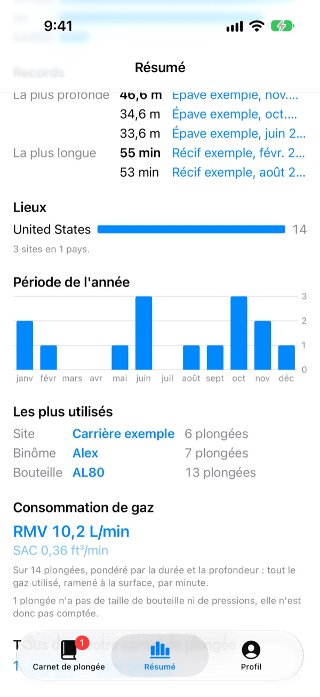
Synchroniser avec iCloud
| Tâche | iPhone et iPad | Mac |
|---|---|---|
| Activer la synchronisation | Profil → Synchronisation | Thermocline → Réglages → Synchronisation |
Tous les appareils connectés au même Compte Apple partagent alors un seul carnet, stocké dans votre propre iCloud privé. Les modifications faites hors ligne attendent sur l'appareil et sont envoyées quand il est de nouveau en ligne.
La section Synchronisation affiche l'état, ce qui est En attente d'envoi, et si cet appareil et vos autres appareils concordent. Synchroniser maintenant vérifie immédiatement.

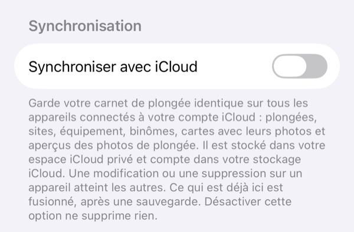
Export, points de restauration et effacement
| Tâche | iPhone et iPad | Mac |
|---|---|---|
| Exporter | Profil → Vos données | Le menu Fichier |
| Points de restauration | Profil → Vos données → Points de restauration | Réglages → Vos données → Points de restauration |
- Exporter : l'UDDF est l'export complet et votre porte de sortie vers n'importe quel carnet. Également disponibles : un tableur (CSV), MacDive XML, des signets pour topographie de grotte (CSV) et un résumé d'expérience (texte) pour les prérequis de formation.
- Points de restauration : un point est enregistré avant d'activer la synchronisation, avant un import important, une fusion, une jonction, un effacement et avant toute suppression. Restaurer enregistre d'abord votre carnet actuel comme point de restauration, vous pouvez donc l'annuler.
- Effacer : Effacer le carnet de plongée… propose d'exporter d'abord. Avec la synchronisation activée, vos autres appareils suivent.

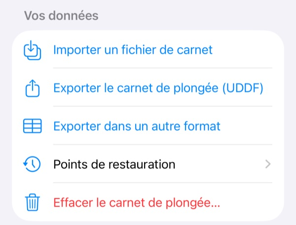
Toujours bloqué ?
Consultez Dépannage, ou envoyez vos remarques depuis TestFlight ou à brian@616labs.net.